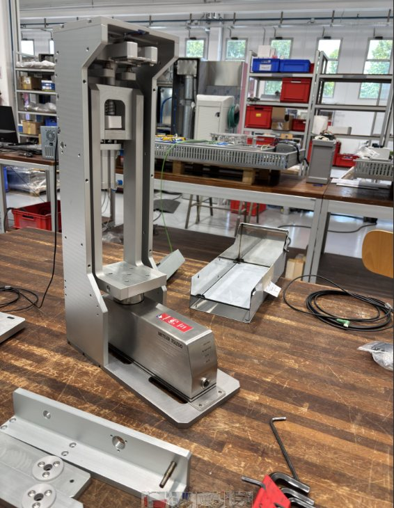
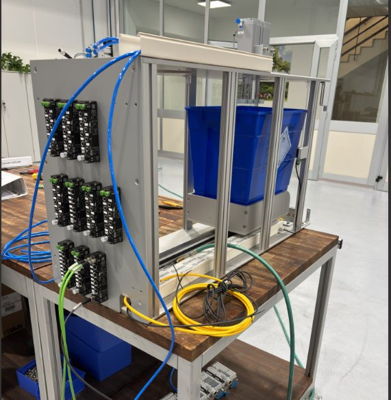
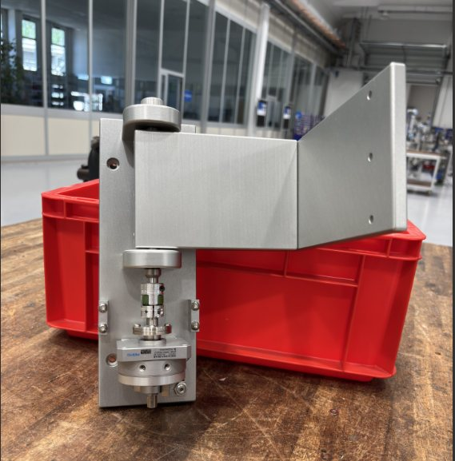
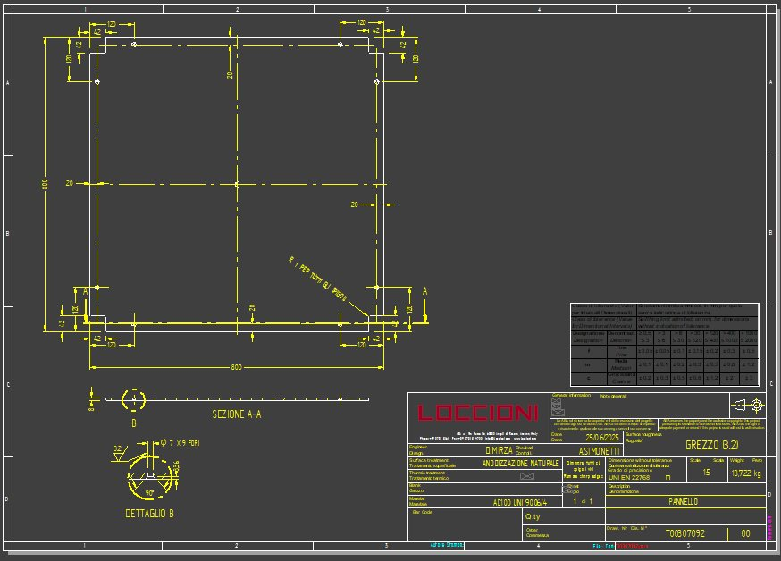
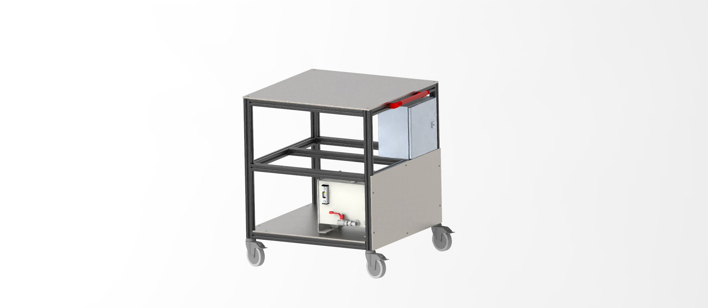

The team
During my summer internship, I was part of the APOTECA team, which consists of around 50 people working across service, customer care, system validation, and robot design. I was integrated into the APOTECA design team, made up of an electrical engineer, three software developers, and two mechanical engineers. Together, we worked on the APOTECA bag project, a new robotic system designed for sterile IV drug preparation, which will be delivered to the Mayo Clinic in Rochester, the top-ranked hospital in the United States.
The APOTECAbag robot
The APOTECAbag robot automates the entire preparation process of intravenous medications — from drawing drugs from vials or ampoules, to accurately dosing them, injecting them into IV bags (such as saline or glucose solutions), labeling the final products with full traceability, and documenting each step to ensure compliance with hospital standards and audit procedures. The system is designed to ensure maximum precision, sterility, and safety, significantly reducing the risk of human error and contamination during drug preparation.
Assembling the functional units of the machine
My daily tasks included the assembly of functional units based on 2D and 3D technical drawings, followed by their integration into the main frame of the system. I was responsible for assembling and testing the assembled units, identifying any potential issues or malfunctions, and proposing improvements to enhance performance or reliability. When necessary, I updated the relevant technical drawings using CAD software, ensuring that documentation accurately reflected design changes and optimizations.
Floor-to-Ceiling implementation
During this time, I also contributed to the development of the APOTECA bag robot intended for delivery to Copenhagen. This version required specific adaptations to comply with the stricter GMP (Good Manufacturing Practice) regulations applicable in that context.
One of the key differences in this version was the need for a Floor-to-Ceiling (FTC) closing system, along with the integration of two probes connected to external particle counters to monitor the cleanroom conditions inside the machine. For a period of the project, I was personally responsible for designing the FTC system in Solid Edge, which included creating a secondary structural frame integrated with the main frame. I also conducted a feasibility study to ensure that the placement of the particle monitoring probes complied with GMP requirements.
The design and study were later presented and discussed directly with the client during a remote meeting, where the work received positive feedback.
Test bench for the robot's cooling circuit
Another project related to the APOTECA bag system was the design of a testing bench for verifying the sealing of the cooling circuit in another robot, the APOTECAchemo. As part of this project, I learned to interpret pneumatic schematics and subsequently designed the test bench in Solid Edge, integrating all necessary commercial electrical, pneumatic, and mechanical components. This involved carefully studying the dimensions, positioning, and compatibility of each component within the assembly.
APOTECA bag clamps
I completed the design and production of custom clamps, from CAD modeling to 3D printing, to adapt the APOTECA bag robot for use with elastomeric pumps in addition to traditional IV bags.
Additional skills
In addition to the main projects I was involved in, I gained valuable technical and engineering knowledge by assisting other mechanical engineers and participating in visits to various metalworking suppliers. Through this experience, I developed new skills in both design and manufacturing processes.
I learned how to write technical rationales, convert design objects into Solid Edge models, and create detailed production drawings and tables used by suppliers to manufacture mechanical parts. I also studied and applied engineering and feasibility processes related to the production of components and assemblies.
From a mechanical perspective, I became proficient in the use of milling machines, reamers, thread-cutting tools, and surface treatment techniques for metals such as natural anodizing of aluminum and steel finishing. I dedicated several days to studying dimensional and geometric tolerances, gaining a solid understanding of their critical role in the assembly of mechanical components.
I also learned to draft quality plan documentation for robotic systems in preparation for ISO certification inspections.
Learn more about Loccioni and its departments →
Gallery



